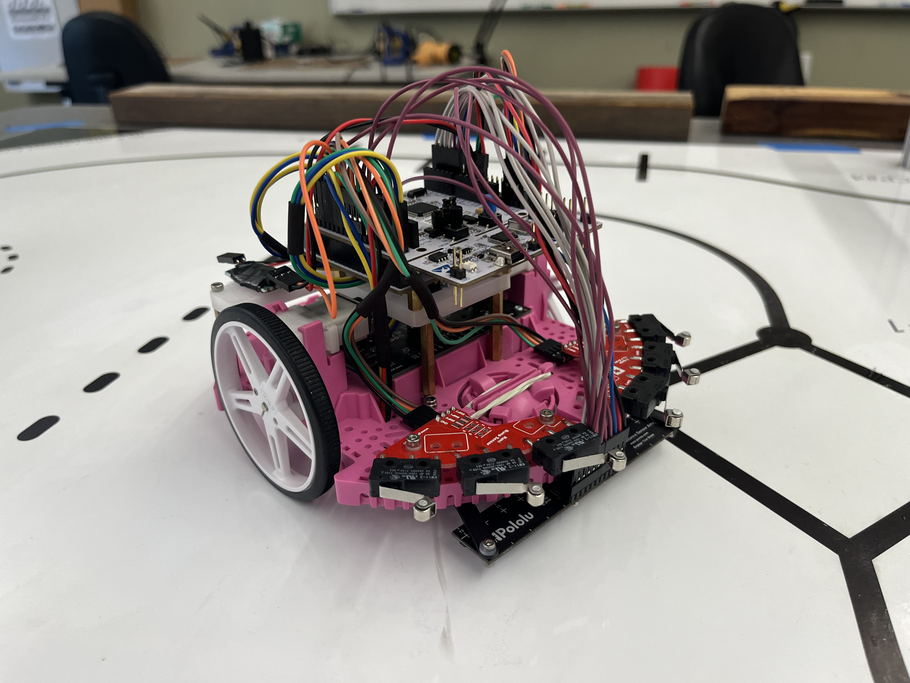

MECHA03 ROMI documentation¶
Authors: Col Cook and Nathan Neugeboren
Instructor: Charlie Revfem
Summary¶
Over the course of a 10 week quarter, we worked through labs which built-up mechatronics skills using a 2-wheeled robot ROMI.
{kind=link}
We implemented multitasking programs to characterize motor constants, use an Infra-red Line Sensor to follow a line in a circle, and interfaced with an IMU over I2C to point in a specific heading. All of this came together through in our final project in which ROMI had to make its way through a course, hitting checkpoints, navigating through a tight space, detecting a wall, and making it all the way back to the starting position, with the added bonus of time deductions for pushing cups outside of a designated zone.
Course & Strategy¶

Our strategy was to cut as many corners as possible, seperating the track into many straight-line segments. For each segement we controlled the heading of ROMI based either on line following or IMU heading and measured the distance traveled to determine when to switch to the next line segment. This strategy allowed us to achieve the fastest time in the class, consitently achieving times of approximately 7 seconds and pushing both cups out of their zones resulting in a -10 second deduction. Our fastest time, including deductions was -3.10 seconds, the video of this time is shown below.